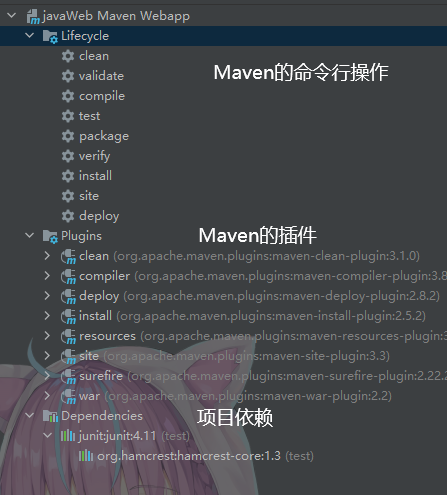
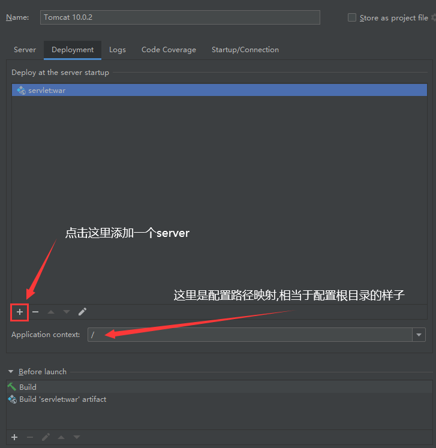
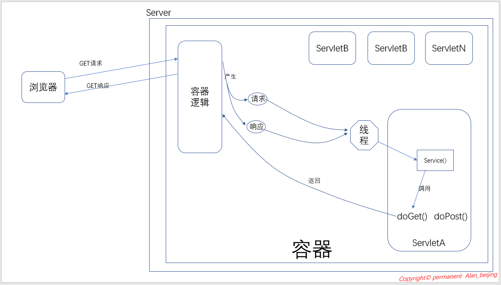
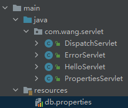
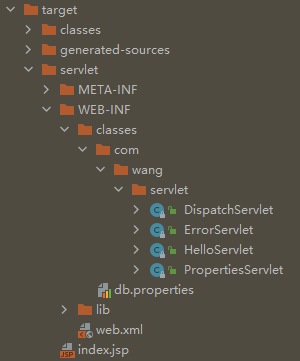
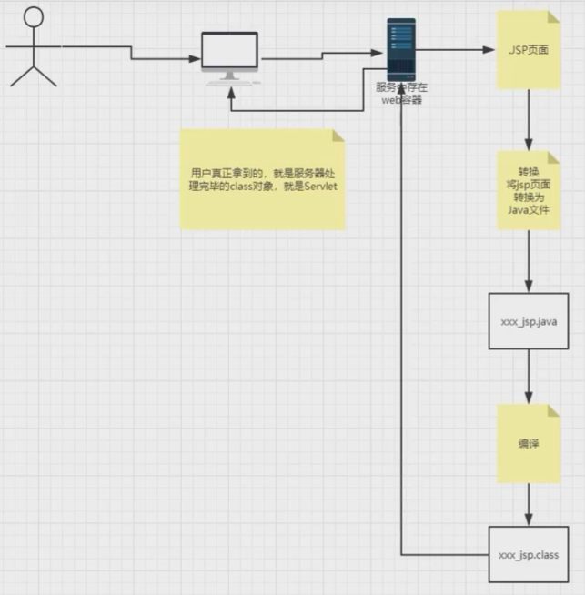
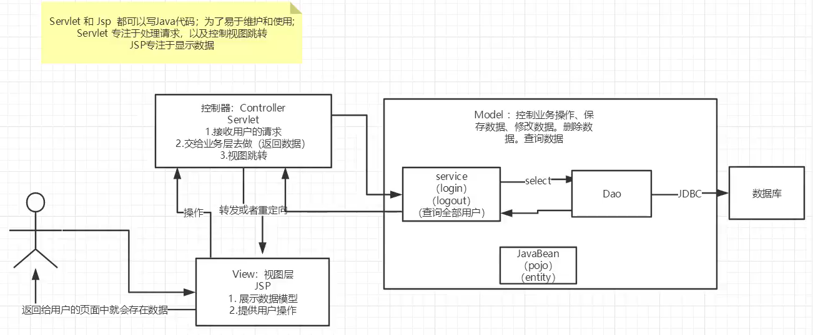
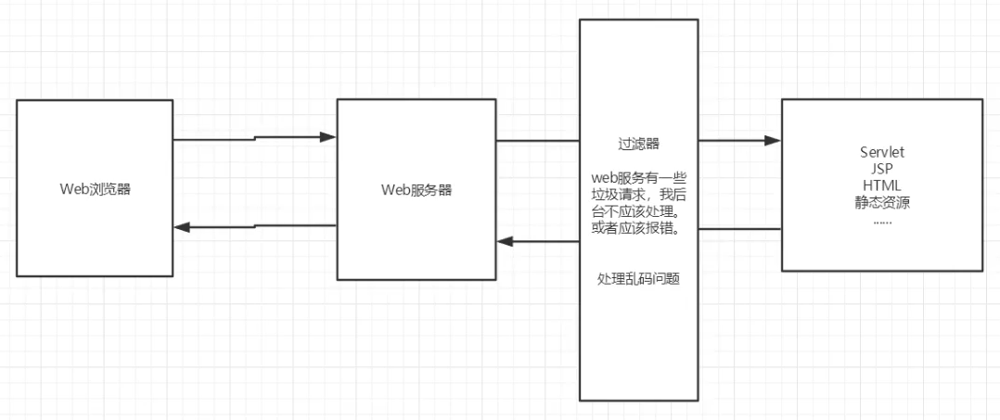

# javaWeb
# 基本概念
web 开发:
- 静态网页
- html,css
- 提供给所有人看的数据始终不会发生变化！
- 动态 web
- 淘宝，几乎是所有的网站；
- 提供给所有人看的数据始终会发生变化，每个人在不同的时间，不同的地点看到的信息各不相同！
- 技术栈：Servlet/JSP，ASP，PHP
- html,css
在 Java 中，动态 web 资源开发的技术统称为 JavaWeb;
# 静态 web
- 静态 web 存在的缺点
- Web 页面无法动态更新，所有用户看到都是同一个页面
- 轮播图，点击特效：伪动态
- JavaScript [实际开发中，它用的最多]
- VBScript
- 它无法和数据库交互 (数据无法持久化)
- Web 页面无法动态更新，所有用户看到都是同一个页面
# 动态 web
显示效果因人而异
- 缺点:
- 加入服务器的动态 web 资源出现了错误，我们需要重新编写我们的后台程序，重新发布；
- 停机维护
- 优点:
- Web 页面可以动态更新，所有用户看到都不是同一个页面
- 它可以与数据库交互
# web 服务器
- ASP:
- 微软：国内最早流行的就是 ASP;
- 在 HTML 中嵌入了 VB 的脚本，ASP + COM;
- 在 ASP 开发中，基本一个页面有几千行业务代码
- 维护成本高
- PHP
- PHP 开发速度块，功能强大，跨平台，代码简单
- 无法承载大访问量的情况
- JSP/Servlet
- sun 公司主推的 B/S 架构
- B/S 浏览和服务器
- C/S 客户端和服务器
- 基于 java 语言
- 可以承载三高 (高性能高可用高并发) 问题带来的影响
- sun 公司主推的 B/S 架构
服务器是一种被动响应，用来处理用用户的一些请求和给用户一些响应信息；
- IIS
- 微软的自带服务器
- Tomcat
- Tomcat 服务器是一个免费的开放源代码的 Web 应用服务器，属于轻量级应用服务器，在中小型系统和并发访问用户不是很多的场合下被普遍使用，是开发和调试 JSP 程序的首选。
- Tomcat 实际上运行 SP 页面和 Servlet。
# Http
http:
超文本传输协议（Hyper Text Transfer Protocol，HTTP）是一个简单的请求 - 响应协议，它通常运行在 TCP 之上。它指定了客户端可能发送给服务器什么样的消息以及得到什么样的响应。
https:
HTTPS （全称：Hyper Text Transfer Protocol over SecureSocket Layer），是以安全为目标的 HTTP 通道，在 HTTP 的基础上通过传输加密和身份认证保证了传输过程的安全性 。HTTPS 在 HTTP 的基础下加入 SSL，HTTPS 的安全基础是 SSL，因此加密的详细内容就需要 SSL。 HTTPS 存在不同于 HTTP 的默认端口及一个加密 / 身份验证层（在 HTTP 与 TCP 之间）。这个系统提供了身份验证与加密通讯方法。它被广泛用于万维网上安全敏感的通讯，例如交易支付等方面 。
# Maven
管理 java 项目依赖工具

# Servlet
- Servlet 就是 sun 公司开发动态 web 的一门技术
- Sun 在这些 API 中提供一个接口叫做: Servlet，如果你想开发一个 Servlet 程序，只需要完成两个小步骤:
- 编写一个类，实现 Servlet 接口
- 把开发好的 Java 类部署到 web 服务器中。
- 把实现了 Servlet 接口的 Java 程序叫做，Servlet
sun 公司给了两个 servlet 的默认实现类: HttpServlet,GenericServlet
# HelloServlet
引入依赖
<dependencies><!-- tomcat 8 --><!-- <dependency>--><!-- <groupId>javax.servlet</groupId>--><!-- <artifactId>javax.servlet-api</artifactId>--><!-- <version>4.0.1</version>--><!-- </dependency>--><!-- <dependency>--><!-- <groupId>javax.servlet.jsp</groupId>--><!-- <artifactId>jsp-api</artifactId>--><!-- <version>2.2</version>--><!-- </dependency>--><!-- tomcat 10 --><!-- 因为我使用的 tomcat 版本为 10.0.2, 所以之前访问时报错，原因是因为 tomcat10 将依赖的包改为了 jakarta.servlet 下的包 --><dependency><groupId>jakarta.servlet</groupId>
<artifactId>jakarta.servlet-api</artifactId>
<version>5.0.0</version>
</dependency><dependency><groupId>jakarta.servlet.jsp</groupId>
<artifactId>jakarta.servlet.jsp-api</artifactId>
<version>3.0.0</version>
</dependency></dependencies>编写一个类，继承 HttpServlet 类
重写方法
public class HelloServlet extends HttpServlet {
@Overrideprotected void doGet(HttpServletRequest req, HttpServletResponse resp) throws ServletException, IOException {
PrintWriter writer = resp.getWriter();
writer.println("Hello Servlet");
System.out.println("Hello Servlet");
}@Overrideprotected void doPost(HttpServletRequest req, HttpServletResponse resp) throws ServletException, IOException {
super.doPost(req, resp);
}}编写 servlet 的映射
我们写的是 Java 程序，但浏览器访问的是 web 服务器，所有我们需要在 web 服务器中注册 servlet, 并给它一个可以使用浏览器访问的路径<!-- web.xml --><!-- 注册 servlet --><servlet><servlet-name>Hello</servlet-name>
<servlet-class>com.wang.servlet.HelloServlet</servlet-class>
</servlet><!-- servlet 的请求路径 --><servlet-mapping><servlet-name>Hello</servlet-name>
<url-pattern>/hello</url-pattern>
</servlet-mapping>配置 tomcat
访问
localhost:8080/hello
# Servlet 原理
参考博客

- 浏览器向服务器发出 GET 请求 (请求服务器 ServletA)
- 服务器上的容器逻辑接收到该 url, 根据该 url 判断为 Servlet 请求，此时容器逻辑将产生两个对象：请求对象 (HttpServletRequest) 和响应对象 (HttpServletResponce)
- 容器逻辑根据 url 找到目标 Servlet (本示例目标 Servlet 为 ServletA), 且创建一个线程 A
- 容器逻辑将刚才创建的请求对象和响应对象传递给线程 A
- 容器逻辑调用 Servlet 的 service () 方法
- service () 方法根据请求类型 (本示例为 GET 请求) 调用 doGet ()(本示例调用 doGet ()) 或 doPost () 方法
- doGet () 执行完后，将结果返回给容器逻辑
- 线程 A 被销毁或被放在线程池中
servlet 就是一个处理请求和返回结果的处理器
Servlet 在 JavaWeb 中，扮演两个角色：页面角色和控制器角色。
# Mapping 问题
一个 Servlet 可以指定一个映射路径
<servlet-mapping><servlet-name>Hello</servlet-name>
<url-pattern>/hello</url-pattern>
</servlet-mapping>一个 Servlet 可以指定多个映射路径
<servlet-mapping><servlet-name>Hello</servlet-name>
<url-pattern>/hello</url-pattern>
</servlet-mapping><servlet-mapping><servlet-name>Hello</servlet-name>
<url-pattern>/hello1</url-pattern>
</servlet-mapping><servlet-mapping><servlet-name>Hello</servlet-name>
<url-pattern>/hello2</url-pattern>
</servlet-mapping><servlet-mapping><servlet-name>Hello</servlet-name>
<url-pattern>/hello3</url-pattern>
</servlet-mapping><servlet-mapping><servlet-name>Hello</servlet-name>
<url-pattern>/hello4</url-pattern>
</servlet-mapping>一个 Servlet 可以指定通用映射路径
<servlet-mapping><servlet-name>Hello</servlet-name>
<url-pattern>/hello/*</url-pattern>
<!-- 使用通配符 * --></servlet-mapping>可以指定默认映射路径
<servlet-mapping><servlet-name>Hello</servlet-name>
<url-pattern>/*</url-pattern>
</servlet-mapping>指定一些后缀或者前缀
<!-- 可以自定义后缀实现请求映射* 前面不能加项目映射的路径
-->
<servlet-mapping><servlet-name>Hello</servlet-name>
<url-pattern>*.do</url-pattern>
</servlet-mapping>优先级问题
指定了固有的映射路径优先级最高，如果找不到才会走默认的处理请求
# ServletContext
web 容器在启动时，会为每个 web 程序都创建一个对应的 ServletContext 对象，它代表了当前的 web 应用；
context: 上下文
应用:
共享数据
多个 servlet 程序中的数据共用一个 ServletContext 对象
可以在一个 Servlet 中在 ServletContext 对象中添加信息，在另一个 Servlet 中去取出 ServletContext 对象中的信息
//servletA:ServletContext context = this.getServletContext(); // 获取 ServletContext 对象
context.setAttribute("name",new String("qwq")); // 添加信息
//servletB:ServletContext context = this.getServletContext(); // 获取 ServletContext 对象
String name = (String) context.getAttribute("name"); // 获取信息
设置程序初始化参数
web.xml
<context-param><param-name>url</param-name>
<param-value>jdbc:mysql://localhost:8080</param-value>
</context-param>servlet.java
ServletContext context = this.getServletContext();
String url = context.getInitParameter("url");// 获取参数
请求转发
public class DispatchServlet extends HttpServlet {
@Overrideprotected void doGet(HttpServletRequest req, HttpServletResponse resp) throws ServletException, IOException {
ServletContext context = this.getServletContext();
RequestDispatcher dispatcher = context.getRequestDispatcher("/hello");// 参数为转发的地址路径
dispatcher.forward(req, resp); // 将 req 与 resp 转发，起到一个中转站的作用
}}- 转发与重定向不同
- 转发的路径不会改变，是服务器内部的操作
- 重定向是将请求的路径改变，是客户端操作的改变
- 转发与重定向不同
获取 Properties 配置文件

public class PropertiesServlet extends HttpServlet {
@Overrideprotected void doGet(HttpServletRequest req, HttpServletResponse resp) throws ServletException, IOException {
ServletContext context = this.getServletContext();
InputStream resource = context.getResourceAsStream("/WEB-INF/classes/db.properties");// 此处使用的路径与 target 下路径一致
Properties properties = new Properties();
properties.load(resource);
// 获取 properties 属性String username = properties.getProperty("username");
String password = properties.getProperty("password");
}}
以上内容大部分不会去使用，之后有其他的替代技术
# HttpServletResponse
web 服务器接收到客户端的 http 请求，针对这个请求，分别创建一个代表请求的 HttpServletRequest 对象，代表响应的一个 HttpServletResponse;
- 如果要获取客户端请求过来的参数：找 HttpServletRequest
- 如果要给客户端响应一些信息：找 HttpServletResponse
简单分类:
- 向浏览器发送数据的方法
ServletOutputStream getOutputStream() throws IOException; | |
PrintWriter getWriter() throws IOException; |
向浏览器发送响应头的方法
void setCharacterEncoding(String var1);
void setContentLength(int var1);
void setContentLengthLong(long var1);
void setContentType(String var1);
void setDateHeader(String var1, long var2);
void addDateHeader(String var1, long var2);
void setHeader(String var1, String var2);
void addHeader(String var1, String var2);
void setIntHeader(String var1, int var2);
void addIntHeader(String var1, int var2);
响应状态码
int SC_OK = 200;
int SC_MULTIPLE_CHOICES = 300;
int SC_NOT_FOUND = 404;
int SC_INTERNAL_SERVER_ERROR = 500;
int SC_BAD_GATEWAY = 502;
常见应用:
向浏览器输出消息
下载文件
获取下载文件的路径
获取下载文件名
让浏览器支持下载我们需要的东西
获取下载文件的输入流
创建缓冲区
获取 OutputStream 对象
将 FileOutputStream 流写入到 buffer 缓冲区
使用 OutputStream 将缓冲区中的数据输出到客户端
public class FileServlet extends HttpServlet {
@Overrideprotected void doGet(HttpServletRequest req, HttpServletResponse resp) throws ServletException, IOException {
// 获取下载文件的路径String realPath = this.getServletContext().getRealPath("WEB-INF/classes/1.jpg");
System.out.println("文件路径:"+realPath);
// 获取下载文件名String fileName = realPath.substring(realPath.lastIndexOf("\\") + 1);
System.out.println("文件名:"+fileName);
// 让浏览器支持下载我们需要的东西resp.setHeader("Content-Disposition","attachment;filename="+ URLEncoder.encode(fileName,"UTF-8"));// 若为中文文件名则需要转码
// 获取下载文件的输入流FileInputStream fileInputStream = new FileInputStream(realPath);
// 创建缓冲区int len = 0;
byte[] buffer = new byte[1024];
// 获取 OutputStream 对象ServletOutputStream outputStream = resp.getOutputStream();
// 将 FileOutputStream 流写入到 buffer 缓冲区// 使用 OutputStream 将缓冲区中的数据输出到客户端while ((len=fileInputStream.read(buffer))>0){
outputStream.write(buffer,0,len);
}// 关闭输入输出流fileInputStream.close();
outputStream.close();
}}
实现验证码功能
public class ImageServlet extends HttpServlet {
@Overrideprotected void doGet(HttpServletRequest req, HttpServletResponse resp) throws ServletException, IOException {
// 让浏览器三秒刷新一次resp.setHeader("refresh","3");
// 在内存中创建一个图片BufferedImage image = new BufferedImage(80, 20, BufferedImage.TYPE_INT_RGB);
// 得到画布Graphics2D graphics = (Graphics2D) image.getGraphics();
// 填充图片背景颜色graphics.setColor(Color.PINK);
graphics.fillRect(0,0,80,20);
// 写入验证码数字graphics.setColor(Color.CYAN);
graphics.setFont(new Font(null,Font.BOLD,20));
graphics.drawString(randNum(),5,19);
// 告诉浏览器这个请求用图片的方式打开resp.setContentType("image/jpeg");
// 取消浏览器缓存resp.setDateHeader("expires",-1);
resp.setHeader("Cache-Control","no-cache");
resp.setHeader("Pragma","no-cache");
// 将图片写入回应ImageIO.write(image,"jpg",resp.getOutputStream());
}// 生成随机数private String randNum(){
Random random = new Random();
int num = random.nextInt(999999);
String numStr = String.format("%06d", num);
return numStr;
}}重定向 (重点)
resp.sendRedirect("/xxx"); //就这一句代码// 等价于这两句代码resp.setHeader("Location","/xxx");
resp.setStatus(HttpServletResponse.SC_FOUND);
# HttpServletRequest
HttpServletRequest 代表客户端的请求，用户通过 Http 协议访问服务器，HTTP 请求中的所有信息会被封装到 HttpServletRequest，通过这个 HttpServletRequest 的方法，获得客户端的所有信息。
- 获取参数
req.getParameter("name") - 转发 / 重定向
# session-cookie
# 会话
** 会话:** 用户打开一个浏览器，点击了很多超链接，访问多个 web 资源，关闭浏览器，这个过程可以称之为会话。
** 有状态会话:** 不同用户访问服务器服务器需要有不同的回应，这种带有用户信息的会话叫有状态会话。
网站如何知道用户曾经来过：
- 服务端给客户端一个 信件，客户端下次访问带上信件就行；cookie
- 服务器登记用户来过，下次再来服务器匹配用户；session
# 保存会话的两种技术
cookie
- 客户端技术（响应、请求）
session
- 服务器技术，利用该技术可以保存用户的会话信息。
# cookie
cookie 实现保存用户上次访问时间：
public class CookieServlet extends HttpServlet { | |
@Override | |
protected void doGet(HttpServletRequest req, HttpServletResponse resp) throws ServletException, IOException { | |
// 保存用户上一次访问的时间 | |
// 解决中文乱码 | |
req.setCharacterEncoding("utf-8"); | |
resp.setCharacterEncoding("GBK"); | |
PrintWriter writer = resp.getWriter(); | |
// 获得 cookie | |
Cookie[] cookies = req.getCookies(); | |
boolean flag = false; | |
for (Cookie cookie : cookies) { | |
if("time".equals(cookie.getName())){ | |
flag = true; | |
} | |
} | |
if (flag) { | |
for (int i = 0; i < cookies.length; i++) { | |
Cookie cookie = cookies[i]; | |
if ("time".equals(cookie.getName())){ | |
writer.println("上次访问时间:"+ new Date(Long.parseLong(cookie.getValue())).toString()); | |
Cookie time = new Cookie("time", System.currentTimeMillis()+""); | |
resp.addCookie(time); | |
} | |
} | |
} else { | |
writer.println("首次访问"); | |
Cookie cookie = new Cookie("time", System.currentTimeMillis()+""); | |
resp.addCookie(cookie); | |
} | |
} | |
} |
- 一个 cookie 只能保存一个信息
- 一个 web 站点可以给浏览器发送 cookie，最多存放 20 个 cookie
- cookie 大小限制为 4kb
- 浏览器可以存储 300 个 cookie
- 同名 cookie 会自动替换
删除 cookie 的一些方法
- 将 cookie 的有效期设置为 0，同名替换
- 不设置有效期，关闭浏览器自动失效
编码解码：
// 出现乱码时注意编码解码 | |
URLEncoder.encode("qwq","UTF-8"); | |
URLDecoder.decode("qwq","UTF-8"); |
# session
什么是 Session:
- 服务器会给每一个用户 (浏览器）创建一个 Seesion 对象；
- 一个 Seesion 独占一个浏览器，只要浏览器没有关闭，这个 Session 就存在；
- 用户登录之后，整个网站它都可以访问；
通过 Attribute 来设置取出数据
protected void doGet(HttpServletRequest req, HttpServletResponse resp) throws ServletException, IOException { | |
// 解决乱码 | |
req.setCharacterEncoding("utf-8"); | |
resp.setCharacterEncoding("utf-8"); | |
resp.setContentType("text/html;charset=utf-8"); | |
// 获得 session | |
HttpSession session = req.getSession(); | |
// 存入数据 | |
session.setAttribute("name","qwq"); | |
// 获取 session id | |
String sessionId = session.getId(); | |
// 判断 session 是不是新创建的 | |
if(session.isNew()){ | |
resp.getWriter().println("session创建成功,ID:"+sessionId); | |
}else { | |
resp.getWriter().println("session已存在,ID:"+sessionId); | |
} | |
// Session 创建时做了什么 | |
// Cookie cookie = new Cookie("JSESSIONID", sessionId); | |
// resp.addCookie(cookie); | |
} | |
session.invalidate();// 手动注销 session |
web.xml:
<session-config> | |
<!-- 配置 session 失效时间，15 分钟后自动失效 --> | |
<session-timeout>15</session-timeout> | |
</session-config> |
Session 和 cookie 的区别:
- Cookie 是把用户的数据写给用户的浏览器，浏览器保存 (可以保存多个)
- Session 把用户的数据写到用户独占 Session 中，服务器端保存 (保存重要的信息，减少服务器资源的浪费)
- Session 对象由服务器创建；
使用场景:
- 保存一个登录用户的信息；
- 购物车信息；
- 在整个网站中经常会使用的数据，我们将它保存在 Session 中；
# JSP
Java Server Pages : Java 服务器端页面，也和 Servlet 一样，用于动态 Web 技术！
最大的特点:
写 JSP 就像在写 HTML 区别:
HTML 只给用户提供静态的数据
JSP 页面中可以嵌入 JAVA 代码，为用户提供动态数据；
# JSP 原理
浏览器向服务器发送请求，不管访问什么资源，其实都是在访问 Servlet!
JSP 最终也会被转换成为一个 Java 类！
JSP 本质上就是一个 Servlet
/* | |
* Generated by the Jasper component of Apache Tomcat | |
* Version: Apache Tomcat/10.0.2 | |
* Generated at: 2021-08-02 03:18:15 UTC | |
* Note: The last modified time of this file was set to | |
* the last modified time of the source file after | |
* generation to assist with modification tracking. | |
*/ | |
package org.apache.jsp; | |
import jakarta.servlet.*; | |
import jakarta.servlet.http.*; | |
import jakarta.servlet.jsp.*; | |
public final class index_jsp extends org.apache.jasper.runtime.HttpJspBase | |
implements org.apache.jasper.runtime.JspSourceDependent, | |
org.apache.jasper.runtime.JspSourceImports { | |
private static final jakarta.servlet.jsp.JspFactory _jspxFactory = | |
jakarta.servlet.jsp.JspFactory.getDefaultFactory(); | |
private static java.util.Map<java.lang.String,java.lang.Long> _jspx_dependants; | |
private static final java.util.Set<java.lang.String> _jspx_imports_packages; | |
private static final java.util.Set<java.lang.String> _jspx_imports_classes; | |
static { | |
_jspx_imports_packages = new java.util.HashSet<>(); | |
_jspx_imports_packages.add("jakarta.servlet"); | |
_jspx_imports_packages.add("jakarta.servlet.http"); | |
_jspx_imports_packages.add("jakarta.servlet.jsp"); | |
_jspx_imports_classes = null; | |
} | |
private volatile jakarta.el.ExpressionFactory _el_expressionfactory; | |
private volatile org.apache.tomcat.InstanceManager _jsp_instancemanager; | |
public java.util.Map<java.lang.String,java.lang.Long> getDependants() { | |
return _jspx_dependants; | |
} | |
public java.util.Set<java.lang.String> getPackageImports() { | |
return _jspx_imports_packages; | |
} | |
public java.util.Set<java.lang.String> getClassImports() { | |
return _jspx_imports_classes; | |
} | |
public jakarta.el.ExpressionFactory _jsp_getExpressionFactory() { | |
if (_el_expressionfactory == null) { | |
synchronized (this) { | |
if (_el_expressionfactory == null) { | |
_el_expressionfactory = _jspxFactory.getJspApplicationContext(getServletConfig().getServletContext()).getExpressionFactory(); | |
} | |
} | |
} | |
return _el_expressionfactory; | |
} | |
public org.apache.tomcat.InstanceManager _jsp_getInstanceManager() { | |
if (_jsp_instancemanager == null) { | |
synchronized (this) { | |
if (_jsp_instancemanager == null) { | |
_jsp_instancemanager = org.apache.jasper.runtime.InstanceManagerFactory.getInstanceManager(getServletConfig()); | |
} | |
} | |
} | |
return _jsp_instancemanager; | |
} | |
public void _jspInit() { | |
} | |
public void _jspDestroy() { | |
} | |
public void _jspService(final jakarta.servlet.http.HttpServletRequest request, final jakarta.servlet.http.HttpServletResponse response) | |
throws java.io.IOException, jakarta.servlet.ServletException { | |
if (!jakarta.servlet.DispatcherType.ERROR.equals(request.getDispatcherType())) { | |
final java.lang.String _jspx_method = request.getMethod(); | |
if ("OPTIONS".equals(_jspx_method)) { | |
response.setHeader("Allow","GET, HEAD, POST, OPTIONS"); | |
return; | |
} | |
if (!"GET".equals(_jspx_method) && !"POST".equals(_jspx_method) && !"HEAD".equals(_jspx_method)) { | |
response.setHeader("Allow","GET, HEAD, POST, OPTIONS"); | |
response.sendError(HttpServletResponse.SC_METHOD_NOT_ALLOWED, "JSP 只允许 GET、POST 或 HEAD。Jasper 还允许 OPTIONS"); | |
return; | |
} | |
} | |
final jakarta.servlet.jsp.PageContext pageContext; | |
jakarta.servlet.http.HttpSession session = null; | |
final jakarta.servlet.ServletContext application; | |
final jakarta.servlet.ServletConfig config; | |
jakarta.servlet.jsp.JspWriter out = null; | |
final java.lang.Object page = this; | |
jakarta.servlet.jsp.JspWriter _jspx_out = null; | |
jakarta.servlet.jsp.PageContext _jspx_page_context = null; | |
try { | |
response.setContentType("text/html"); | |
pageContext = _jspxFactory.getPageContext(this, request, response, | |
null, true, 8192, true); | |
// 一些在 jsp 中可以直接使用的对象 | |
//------------------------- | |
_jspx_page_context = pageContext; | |
application = pageContext.getServletContext(); | |
config = pageContext.getServletConfig(); | |
session = pageContext.getSession(); | |
out = pageContext.getOut(); | |
_jspx_out = out; | |
//------------------------- | |
// 自动生成输出 html 页面的代码 | |
out.write("<html>\n"); | |
out.write("<body>\n"); | |
out.write("<h2>Hello World!</h2>\n"); | |
out.write("</body>\n"); | |
out.write("</html>\n"); | |
} catch (java.lang.Throwable t) { | |
if (!(t instanceof jakarta.servlet.jsp.SkipPageException)){ | |
out = _jspx_out; | |
if (out != null && out.getBufferSize() != 0) | |
try { | |
if (response.isCommitted()) { | |
out.flush(); | |
} else { | |
out.clearBuffer(); | |
} | |
} catch (java.io.IOException e) {} | |
if (_jspx_page_context != null) _jspx_page_context.handlePageException(t); | |
else throw new ServletException(t); | |
} | |
} finally { | |
_jspxFactory.releasePageContext(_jspx_page_context); | |
} | |
} | |
} |

在 JSP 页面中:
只要是 JAVA 代码就会原封不动的输出；
如果是 HTML 代码，就会被转换为
out.write("<html>\n");
的格式输出
# JSP 基础语法与指令
JSP 过时了！ 我不看辣 (暴论
有要用到的时候再看吧 qwqq
算了我还是看吧 qwqqqq
语法:
jsp 表达式
<%-- JSP表达式 作用: 用来将程序的输出,输出到客户端 <%=变量或者表达式%> --%> <%=new java.util.Date()%>jap 脚本片段
<%-- JSP脚本片段 --%> <% int cnt = 1; StringBuilder s = new StringBuilder("qwq"); for (int i = 0; i < 5; i++) { out.println(String.format("<h%d>"+s+"<h%d>", cnt,cnt)); s.append("q"); cnt++; } %> <%-- JSP脚本中内嵌html --%> <% for (int i = 0; i < 5; i++) { %> <p>hello <%=i%></p> <% } %>jsp 声明
<%-- JSP声明 --%> <%! static { System.out.println("load servlet"); } private int global = 0; private void qwq() { System.out.println("qwq"); } %>- JSP 声明：会被编译到 JSP 生成 Java 的类中！其他的，就会被生成到 **_jspService 方法 ** 中！
指令:
<%@ page args... %>
<%@ include file="xxx" %> 将两个页面合二为一,不推荐使用,可能出现变量重名
推荐使用 <jsp:include page = "/xxx"/> 拼接页面,本质还是两个页面不相互影响
# JSP 内置对象
- PageContext 存东西
- 存的数据只在一个页面中有效
- Request 存东西
- 保存的数据只在一次请求中有效，请求转发会携带这个数据
- Response
- Session 存东西
- 保存的数据只在一次会话中有效，从打开浏览器到关闭浏览器
- Application 【SerlvetContext】存东西
- 保存的数据在服务器中有效，从打开浏览器到关闭浏览器
- config 【SerlvetConfig】
- out
- page
- exception
<%
pageContext.setAttribute("name1", "qwq1"); //保存的数据只在一个页面中有效
request.setAttribute("name2", "qwq2"); //保存的数据只在一次请求中有效，请求转发会携带这个数据
session.setAttribute("name3", "qwq3"); //保存的数据只在一次会话中有效，从打开浏览器到关闭浏览器
application.setAttribute("name4", "qwq4"); //保存的数据在服务器中有效，从打开浏览器到关闭浏览器
%>
<%
//从pagecontext取出,我们通过寻找的方式来/从底层到高层（作用域):
String name1 = (String) pageContext.findAttribute("name1");
String name2 = (String) pageContext.findAttribute("name2");
String name3 = (String) pageContext.findAttribute("name3");
String name4 = (String) pageContext.findAttribute("name4");
String name5 = (String) pageContext.findAttribute("name5"); //不存在
%>
<%--使用EL表达式取出--%>
<h1>name:</h1>
<h4>${name1}</h4>
<h4>${name2}</h4>
<h4>${name3}</h4>
<h4>${name4}</h4>
<h4>${name5}</h4>
<%--null值不会输出--%>
request: 客户端向服务器发送请求，产生的数据，用户看完就没用了，比如：新闻，用户看完没用的！
session: 客户端向服务器发送请求，产生的数据，用户用完一会还有用，比如：购物车；
application: 客户端向服务器发送请求，产生的数据，一个用户用完了，其他用户还可能使用，比如：聊天数据；
# JSP 标签、JSTL 标签、EL 表达式
EL 表达式:
<dependency> | |
<groupId>org.glassfish.web</groupId> | |
<artifactId>jakarta.servlet.jsp.jstl</artifactId> | |
<version>2.0.0</version> | |
</dependency> | |
<dependency> | |
<groupId>org.apache.taglibs</groupId> | |
<artifactId>taglibs-standard-spec</artifactId> | |
<version>1.2.5</version> | |
</dependency> |
${}- 获取数据
- 执行运算
- 获取 web 开发的常用对象
JSP 标签:
<%--jsp:include--%>
<%--http://1ocalhost:8080/xxx.jsp?name=qwq&age=12--%>
<jsp:forward page="/xxx.jsp">
<jsp:param name="name" value="qwq"/>
<jsp:param name="age" value="12"/>
</jsp:forward>
JSTL 表达式:
JSTL 标签库的使用就是为了弥补 HTML 标签的不足；它自定义许多标签，可以供我们使用，标签的功能和 Java 代码一样！
JSP 标准标签库（JSTL）
# JavaBean
实体类
JavaBean 有特定的写法:
- 必须要有一个无参构造
- 属性必须私有化
- 必须有对应的 get/set 方法；
一般用来和数据库的字段做映射 ORM
ORM: 对象关系映射
- 表 --> 类
- 字段 --> 属性
- 行记录 --> 对象
# MVC 三层架构
什么是 MVC: Model view Controller 模型 视图 控制器

- Model
- 业务处理：业务逻辑 (Service)
- 数据持久层: CRUD (Dao)
- View
- 展示数据
- 提供链接发起 Servlet 请求 (a,form, img...)
- Controller (Servlet)
- 接收用户的请求: (req: 请求参数、Session 信息....)
- 交给业务层处理对应的代码
- 控制视图的跳转
இ௰இ
# Filter 过滤器

编写步骤:
导包
jakarta.servlet.Filter编写过滤器
public class CharacterEncodingFilter implements Filter {
// 初始化，在 web 服务器启动时就已经初始化了，随时等待被过滤对象@Overridepublic void init(FilterConfig filterConfig) throws ServletException {
System.out.println("CharacterEncodingFilter初始化");
}// FilterChain 过滤器链@Overridepublic void doFilter(ServletRequest servletRequest, ServletResponse servletResponse, FilterChain filterChain) throws IOException, ServletException {
servletRequest.setCharacterEncoding("utf-8");
servletResponse.setCharacterEncoding("utf-8");
servletResponse.setContentType("text/html;charset=UTF-8");
System.out.println("CharacterEncodingFilter执行前");
filterChain.doFilter(servletRequest,servletResponse); // 让请求继续往下交接，若不写，则请求到这个过滤器时就会被拦截
System.out.println("CharacterEncodingFilter执行后");
}// 销毁，在 web 服务器关闭时就被销毁@Overridepublic void destroy() {
System.out.println("CharacterEncodingFilter销毁");
}}配置 web.xml
<filter><filter-name>encodeing</filter-name>
<filter-class>com.wang.filter.CharacterEncodingFilter</filter-class>
</filter><filter-mapping><filter-name>encodeing</filter-name>
<servlet-name>hello</servlet-name>
<url-pattern>/hello</url-pattern>
</filter-mapping>
# Listener 监听器
不常用，不听了இ௰இ
再往下翻也没有了啦 qwqq